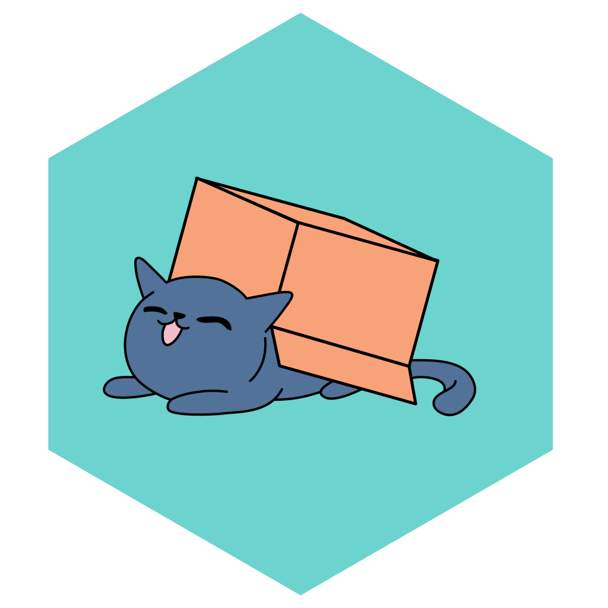
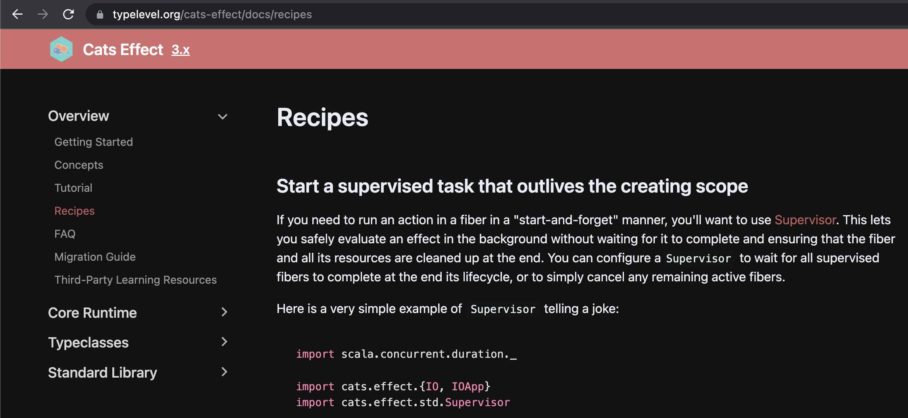

class: center, middle # Cats Effect: Supervisor, Dispatcher, IOLocal  Kamil Kloch • [@kamil_k] • [Superfund Technologies](https://superfund-technologies.com) ??? Hello, **thank for having me, happy to be here**. It **is no nice** to finally attend a f2f Scala event. **I want to start by giving some rationale behind this talk.** **It goes like this**: In our company we are using Scala on the backend side (http layer). **In the process of writing the service** we had to solve a couple of "standard" industry tasks, using **CE and fs2**. (btw, I have a feeling the two have almost become inseparable Scala twins - you end up sucking in fs2 whenever CE codebase is large enough) In principle, we were looking for some **recipes** for standard - I would submit to you - tasks, e.g. how to interop callback-base api with fs2 streams. Cats Effect is an **beautifully designed library** and gives you all the tools to solve those tasks, but the **journey** to actually solve the tasks is **not too obvious**, especially, when you start off. You could argue that a ZIO approach with **batteries included** is the right one, but it is my **firm belief** that such an approach may oftentimes **hit you back in the long run** and actually make you a worse programmer - it is only a matter of time the **easy path is not enough anymore** and then you are stuck, because you end up in a situation when you **lack any deeper understanding** of the **core principles** and building blocks **underpinning the effect system library** So here is the **plan** <!-- &*&*&*&*&*&*&*&*&*&*&*&*&*&*&*&*&*&*&*&*&*&*&*&*&*&*&*&*&*&*&*&*&*&*&*&*&*&*&*&*&*&*&*&*&*&*&*&*&*&*&*&*&*&*&* --> --- ##Plan of the talk 1. Ask for 3 recipes 🍲 - implement an imperative resource-safe web socket client - wrap asynchronous callbacks into an [fs2] Stream - enrich logging with (scoped) contextual data ??? 1. problems you are likely to encounter yourself 2. Use problems as an excuse to dwelve into CE - fibers - structured concurrency - IORuntime - IOApp - local state -- 2. Diverge into Cats-Effect internals -- 3. Propose 3 recipes using [Supervisor][supervisor], [Dispatcher][dispatcher] and [IOLocal][io-local] ??? <!-- &*&*&*&*&*&*&*&*&*&*&*&*&*&*&*&*&*&*&*&*&*&*&*&*&*&*&*&*&*&*&*&*&*&*&*&*&*&*&*&*&*&*&*&*&*&*&*&*&*&*&*&*&*&*&* --> --- ##Cats Effect Recipes 🍲  ??? Speaking about recipies... It looks that developers **are looking for them** **Recent addition to CE web site** It's called recipies :) WIP Encouraged to **contribute in 2 ways**: -- - Propose an idea for a recipe: [issues/3439](https://github.com/typelevel/cats-effect/issues/3439) - Write a recipe yourself! 💪 🍲 <!-- &*&*&*&*&*&*&*&*&*&*&*&*&*&*&*&*&*&*&*&*&*&*&*&*&*&*&*&*&*&*&*&*&*&*&*&*&*&*&*&*&*&*&*&*&*&*&*&*&*&*&*&*&*&*&* --> --- ##mdoc setup ```scala mdoc import cats.implicits._ import cats.effect._ import cats.effect.implicits._ import cats.effect.std.{Supervisor, Queue, Dispatcher} import cats.effect.unsafe.implicits.{global => ioRuntime} import scala.concurrent.duration._ import fs2.Stream import com.typesafe.scalalogging.{CanLog, Logger} import com.typesafe.scalalogging.LoggerTakingImplicit // Custom `unsafeRunSync` for mdoc reasons import daenyth.talk.ce.MdocConsoleWorkaround._ // custom `log.infoConsole` for mdoc reasons import MdocConsoleLoggerWorkaround._ ``` ??? Before we get started **one more preparation slide** **setup code snippets** mostly **compiled and run using mdoc**, amazing tool BTW there are **probably too many code snippets** I do **not expect you to ingest all** of them treat them as a **poor man's live coding session** <!-- &*&*&*&*&*&*&*&*&*&*&*&*&*&*&*&*&*&*&*&*&*&*&*&*&*&*&*&*&*&*&*&*&*&*&*&*&*&*&*&*&*&*&*&*&*&*&*&*&*&*&*&*&*&*&* --> --- ##Task 1: Web Socket client Implement a __resource-safe__ imperative client for: - sending data over a web socket connection - so that releasing the client resource also shuts down all the underlying connections ```scala mdoc:compile-only trait WebSocketClient { def sendMessage(msg: String): IO[Unit] } val clientResource: Resource[IO, WebSocketClient] = ??? clientResource.use { client => client.sendMessage("Hello, Scalar 2023!") } ``` ??? Let's **formulate the tasks** **want to build a resource-safe** ws client ws connection **modeled by an fs2 stream** Simplified API looks as follows: <!-- &*&*&*&*&*&*&*&*&*&*&*&*&*&*&*&*&*&*&*&*&*&*&*&*&*&*&*&*&*&*&*&*&*&*&*&*&*&*&*&*&*&*&*&*&*&*&*&*&*&*&*&*&*&*&* --> --- ##Task 1: Web Socket client Implement a __resource-safe__ imperative client for: - sending data over a web socket connection - so that releasing the client resource also shuts down all the underlying connections ```scala *trait WebSocketClient { * def sendMessage(msg: String): IO[Unit] *} val clientResource: Resource[IO, WebSocketClient] = ??? clientResource.use { client => client.sendMessage("Hello, Scalar 2023!") } ``` ??? trait which **exposes one method** to send the data <!-- &*&*&*&*&*&*&*&*&*&*&*&*&*&*&*&*&*&*&*&*&*&*&*&*&*&*&*&*&*&*&*&*&*&*&*&*&*&*&*&*&*&*&*&*&*&*&*&*&*&*&*&*&*&*&* --> --- ##Task 1: Web Socket client Implement a __resource-safe__ imperative client for: - sending data over a web socket connection - so that releasing the client resource also shuts down all the underlying connections ```scala trait WebSocketClient { def sendMessage(msg: String): IO[Unit] } *val clientResource: Resource[IO, WebSocketClient] = ??? clientResource.use { client => client.sendMessage("Hello, Scalar 2023!") } ``` ??? ws client is **meant to be wrapped in a Resource** - this is **how we achieve** resource safety <!-- &*&*&*&*&*&*&*&*&*&*&*&*&*&*&*&*&*&*&*&*&*&*&*&*&*&*&*&*&*&*&*&*&*&*&*&*&*&*&*&*&*&*&*&*&*&*&*&*&*&*&*&*&*&*&* --> --- ##Task 1: Web Socket client Implement a __resource-safe__ imperative client for: - sending data over a web socket connection - so that releasing the client resource also shuts down all the underlying connections ```scala trait WebSocketClient { def sendMessage(msg: String): IO[Unit] } val clientResource: Resource[IO, WebSocketClient] = ??? *clientResource.use { client => * client.sendMessage("Hello, Scalar 2023!") *} ``` ??? this is **how we would use it**: open the resource which would set up the underlying WS connection on **closing** the resource **WS** would be **shut down** <!-- &*&*&*&*&*&*&*&*&*&*&*&*&*&*&*&*&*&*&*&*&*&*&*&*&*&*&*&*&*&*&*&*&*&*&*&*&*&*&*&*&*&*&*&*&*&*&*&*&*&*&*&*&*&*&* --> --- ##Task 2: fs2 Stream from callbacks Given a callback-based API: - enqueue the messages from the callbacks into an [fs2] stream - preserve the ordering of the messages - make it lightweight for the thread invoking the callbacks ??? that is a common one I believe **translate a callback-based** API into a **fs2 stream** this fs2 stream is actually the **sending side of a web socket connection** **additional constraints: preserve ordering, lightweight ** -- ```scala abstract class CallbackAPI { `def onMessage(msg: String): Unit` } new CallbackAPI { override `def onMessage(msg: String): Unit` = { // enqueue the message into an fs2 Stream // preserve message ordering // do not congest the caller thread } } ``` ??? API: **one callback method** enqueue - **effectful event** <!-- &*&*&*&*&*&*&*&*&*&*&*&*&*&*&*&*&*&*&*&*&*&*&*&*&*&*&*&*&*&*&*&*&*&*&*&*&*&*&*&*&*&*&*&*&*&*&*&*&*&*&*&*&*&*&* --> --- ##Task 3: Contextual logging Enrich log messages with contextual data (e.g. correlation id). (Think tracing, but in logs) ??? **correlation id if you may** think **tracing for logs** logging is a **surprisingly comprehensive/complex ** topic rabbit hole goes surprisingly deep, but **let's not diverge** here are **alive libs** for **contextual logging** in Scala: **quite a lot** **everybody sooner or later** seems to write a **JSON** or **logging** library :) -- Logging libraries for Scala with contextual logging: - [blindsight](https://github.com/tersesystems/blindsight) - [logstage](https://izumi.7mind.io/logstage/index.html) - [log4cats](https://github.com/typelevel/log4cats) - [odin](https://github.com/valskalla/odin) - [scala-logging](https://github.com/lightbend-labs/scala-logging) - [scribe](https://github.com/outr/scribe) - [woof](https://github.com/lego/woof) ??? **Some are effectful** - Odin, log4cats, woof -- Recommended reading: [why-i-wrote-a-logging-library](https://tersesystems.com/blog/2020/05/26/why-i-wrote-a-logging-library/) <!-- &*&*&*&*&*&*&*&*&*&*&*&*&*&*&*&*&*&*&*&*&*&*&*&*&*&*&*&*&*&*&*&*&*&*&*&*&*&*&*&*&*&*&*&*&*&*&*&*&*&*&*&*&*&*&* --> --- ##Tasks - revisited.super[CE3] 1. How to manage the (non-standard) lifecycle of a [fiber]? 2. How to safely and efficiently run `IO` from within unsafe code? 3. How to propagate data across a forked [fiber]? ??? Let's **revise** the 3 tasks **and put them into CE context** 1. ws client - **non-standard lifecycle** of a **fiber** - e.g. **beyond the scope of another fiber** 2. **run** IO from within **impure code** 3. **propagate** data across **the boundary** of a **forked fiber** **Fiber** here, **fiber** there, **let's talk** about fibers. <!-- &*&*&*&*&*&*&*&*&*&*&*&*&*&*&*&*&*&*&*&*&*&*&*&*&*&*&*&*&*&*&*&*&*&*&*&*&*&*&*&*&*&*&*&*&*&*&*&*&*&*&*&*&*&*&* --> --- ##Fibers [Fibers][fiber] are *the* fundamental abstraction in Cats Effect. All effects in IO are executed by some fiber. ??? You are probably very well aware, **the fundamental abstraction** in CE **They are everywhere** **all effects** in IO **are executed by some fiber** But **how do they differ** from threads? **here's a comparison** <!--Compared to operating system threads, fibers:--> <!-- - are *very* lightweight (~150 bytes)--> <!-- - scale indefinitely (with memory being the limiting factor)--> <!-- - (performance may actually *increase* with the number of fibers!)--> <!-- - can be created and started extremely fast--> <!-- - are strongly typed--> <!-- - support asynchronous callbacks--> <!-- - can be safely, efficiently and reliably canceled at any point in time--> <!-- - cancelation can be suppressed within scoped regions--> <!-- - support resource handling--> <!--???--> <!-- - managed by the application runtime - __semantic__ sequentiality, as opposed to __strict__ sequentiality in threads--> <!-- - Threads are scarce — Threads on the JVM map to the operating system level threads - upper bound--> <!-- - thread stop operation has been deprecated.--> <!-- - context switching: from Daniel's talk - page faults account for 30% of total runtime of the application--> <!-- - composability — not typed, no return type.--> <!--The asynchronous support in particular has profound effects, since it means that any individual "step" of a fiber--> <!--(much like a statement in a thread) may be either synchronous in that it runs until it produces a value or errors,--> <!--or asynchronous in that it registers a callback which may be externally invoked at some later point,--> <!--and there is no fundamental difference between these steps: they're just part of the fiber.--> <!--This means that it is just as easy to define business logic which weaves through asynchronous,--> <!--callback-oriented actions as it is to define the same logic in terms of classically blocking control flows.--> <!--resources gracefully released as early as possible within an application.--> <!--First off, is cooperative. When one fiber calls cancel on another fiber, it is effectively a request to the target fiber.--> <!--If the target fiber is unable to cancel at that moment for any reason, the canceling fiber asynchronously waits--> <!--for cancelation to become possible. Once cancelation starts, the target fiber will run all of its finalizers--> <!--(usually used to release resources such as file handles) before yielding control back to the canceler.--> <!--Conversely, interrupt always returns immediately, even if the target Thread has not actually been interrupted.--> <!--If a fiber is performing a series of actions which must be executed atomically (i.e. either all actions execute,--> <!--or none of them do), it can use the IO.uncancelable method to mask the cancelation signal within the scope,--> <!--ensuring that cancelation is deferred until the fiber has completed its critical section. This is commonly used--> <!--in conjunction with compound resource acquisition, where a scarce resource might leak if the fiber were to be canceled--> <!--"in the middle". This differs considerably from Thread#interrupt, which cannot be suppressed.--> <!-- &*&*&*&*&*&*&*&*&*&*&*&*&*&*&*&*&*&*&*&*&*&*&*&*&*&*&*&*&*&*&*&*&*&*&*&*&*&*&*&*&*&*&*&*&*&*&*&*&*&*&*&*&*&*&* --> --- ## Threads vs Fibers <table class="table table-dark table-striped"> <thead> <tr> <th></th> <th>Threads</th> <th>Fibers</th> </tr> </thead> <tbody> <tr> <td>Availability</td> <td><span class="red">scarce</span> - thousands per JVM</td> <td><span class="green">abundant</span> - millions</td> </tr> <tr> <td>Performance</td> <td><span class="red">degrades</span> as # rises</td> <td><span class="green">increases</span> as # rises<sup>*</sup></td> </tr> <tr> <td>Creation</td> <td><span class="red">expensive</span></td> <td><span class="green">cheap</span></td> </tr> <tr> <td>Multi-tasking</td> <td><span class="red">pre-emptive</span></td> <td><span class="green">cooperative</span></td> </tr> <tr> <td>Context switching</td> <td><span class="red">expensive</span></td> <td><span class="green">cheap</span> via yield</td> </tr> <tr> <td>Composability</td> <td><span class="red">missing</span></td> <td><span class="green">typed</span> and <span class="green">composable</span></td> </tr> <tr> <td>Interruption</td> <td><span class="red">unsafe</span></td> <td><span class="green">safe</span> and <span class="green">efficient</span></td> </tr> </tbody> </table> <sup>*</sup>with a clever IORuntime ??? **By no means** a deep comparison - **view from 10km** off the ground **avail**, **cost of creation**: lightweight (150 bytes), **little overhead on creation**, thread - **way more expensive to create**, fibers easily **scale to millions**, **Threads are scarce** — map to **operating system level threads** - upper bound, **performance**: **modern applications - http - highly concurrent** beasts, Java world: **request -> fork() -> response**, **scale badly for threads**, fibers - **perf may increase**, fiber affinity, **Work Stealing Compute Pool** based on **tokio scheduler** from Rust **it goes worse for threads:** **context switching**: **ubiquitous** for concurrent apps - **page faults** account for **30% of total runtime** of the application **multitasking**: fibers - **co-operative** via **yield**, threads - **pre-emptive, forcibly suspended**, managed on the **OS level.** **interruption**: - **basically no such thing** as safe interruption **thread stop** operation has been **deprecated**. **inherently unsafe**, fiber interruption - **safe** and **efficient** **composability** — **no return type**, fibers - **compose beautifully**, sequentiality for fibers is **semantic, on the application level**, as opposed to __strict__ sequentiality in threads - you **glue your code with ;** and **there is nothing you can do later** with it **one more thing**: **async support**: **built into fibers** -- profound - **no difference composing sync and async** <!-- &*&*&*&*&*&*&*&*&*&*&*&*&*&*&*&*&*&*&*&*&*&*&*&*&*&*&*&*&*&*&*&*&*&*&*&*&*&*&*&*&*&*&*&*&*&*&*&*&*&*&*&*&*&*&* --> --- ##Run your IOs from within IOApp IOApp is the primary entry point to a Cats Effect application - takes care of properly setting up `IORuntime` - .green[optimizes for an application fully contained within the `run` method] - .green[sets up [starvation checking](https://typelevel.org/cats-effect/docs/core/starvation-and-tuning) and [fiber dumps](https://typelevel.org/cats-effect/docs/core/fiber-dumps)] - translates SIGTERM to IO cancelation - `.unsafeRun()` does not - fatal exceptions more likely to be captured and logged before terminating - handles `run / fork := true` and `run / fork := false` in sbt ??? **how do you run your fibers?** remember **just 2 things**, the rest is for **the record** <!-- &*&*&*&*&*&*&*&*&*&*&*&*&*&*&*&*&*&*&*&*&*&*&*&*&*&*&*&*&*&*&*&*&*&*&*&*&*&*&*&*&*&*&*&*&*&*&*&*&*&*&*&*&*&*&* --> --- ##Fibers are low-level 🧨 ```scala mdoc:invisible def ioNever = IO.never.as(1).onCancel(IO.println("canceled")) def ioError = IO.raiseError(new Exception).as(1) def fiberSum = for { f1 <- ioError.start f2 <- ioNever.start x <- f1.joinWithNever y <- f2.joinWithNever } yield x + y // 🧨🧨🧨 leaking fiber! fiberSum.attempt.yolo() (ioError, ioNever).parMapN(_ + _).attempt.yolo() ``` ```scala *val ioNever = IO.never.as(1).onCancel(IO.println("canceled")) *val ioError = IO.raiseError(new Exception).as(1) val fiberSum = for { f1 <- ioError.start f2 <- ioNever.start x <- f1.joinWithNever y <- f2.joinWithNever } yield x + y // 🧨🧨🧨 leaking fiber! fiberSum.attempt.yolo() (ioError, ioNever).parMapN(_ + _).attempt.yolo() ``` ??? You probably all know this very well, but as a reminder: <!-- &*&*&*&*&*&*&*&*&*&*&*&*&*&*&*&*&*&*&*&*&*&*&*&*&*&*&*&*&*&*&*&*&*&*&*&*&*&*&*&*&*&*&*&*&*&*&*&*&*&*&*&*&*&*&* --> --- ##Fibers are low-level 🧨 ```scala val ioNever = IO.never.as(1).onCancel(IO.println("canceled")) val ioError = IO.raiseError(new Exception).as(1) val fiberSum = for { * f1 <- ioError.start * f2 <- ioNever.start * x <- f1.joinWithNever * y <- f2.joinWithNever } yield x + y // 🧨🧨🧨 leaking fiber! fiberSum.attempt.yolo() (ioError, ioNever).parMapN(_ + _).attempt.yolo() ``` Concurrently start two effects, combine the results <!-- &*&*&*&*&*&*&*&*&*&*&*&*&*&*&*&*&*&*&*&*&*&*&*&*&*&*&*&*&*&*&*&*&*&*&*&*&*&*&*&*&*&*&*&*&*&*&*&*&*&*&*&*&*&*&* --> --- ##Fibers are low-level 🧨 .code-red[ ```scala val ioNever = IO.never.as(1).onCancel(IO.println("canceled")) val ioError = IO.raiseError(new Exception).as(1) val fiberSum = for { f1 <- ioError.start f2 <- ioNever.start x <- f1.joinWithNever y <- f2.joinWithNever } yield x + y // 🧨🧨🧨 leaking fiber! *fiberSum.attempt.yolo() // res1: Either[Throwable, Int] = Left(value = java.lang.Exception) (ioError, ioNever).parMapN(_ + _).attempt.yolo() // canceled // res2: Either[Throwable, Int] = Left(value = java.lang.Exception) ``` ] ??? ioNever is a **leaking fiber** <!-- &*&*&*&*&*&*&*&*&*&*&*&*&*&*&*&*&*&*&*&*&*&*&*&*&*&*&*&*&*&*&*&*&*&*&*&*&*&*&*&*&*&*&*&*&*&*&*&*&*&*&*&*&*&*&* --> --- ##Fibers are low-level 🧨 .diff-add[ ```scala val ioNever = IO.never.as(1).onCancel(IO.println("canceled")) val ioError = IO.raiseError(new Exception).as(1) val fiberSum = for { f1 <- ioError.start f2 <- ioNever.start x <- f1.joinWithNever y <- f2.joinWithNever } yield x + y // 🧨🧨🧨 leaking fiber! fiberSum.attempt.yolo() // res1: Either[Throwable, Int] = Left(value = java.lang.Exception) *(ioError, ioNever).parMapN(_ + _).attempt.yolo() // canceled // res2: Either[Throwable, Int] = Left(value = java.lang.Exception) ``` ] ??? Here is a **proper way** - high-level **parMapN** combinator as you see, ioNever gets **canceled**, as you would exepect So, **what is the difference**? <!-- &*&*&*&*&*&*&*&*&*&*&*&*&*&*&*&*&*&*&*&*&*&*&*&*&*&*&*&*&*&*&*&*&*&*&*&*&*&*&*&*&*&*&*&*&*&*&*&*&*&*&*&*&*&*&* --> --- ##Structured Concurrency .font-large[.text-center[ Concurrency is [structured](https://typelevel.org/cats-effect/docs/concepts#structured-concurrency) when the syntactic code structure bounds the lifetime of threads (fibers) ]] ??? **We already saw this very definition during Adam's talk** We can **statically reason** about the **lifetimes** of children fibers just by **looking at the code** **no complicated logic** to keep **track of all the child fibers** and manually shut them down. Cats Effect **encourages** [structured concurrency](https://typelevel.org/cats-effect/docs/concepts#structured-concurrency), provides a large number of **flexible tools** for achieving it, **but it does not prevent** unstructured concurrent compositions **such as start**. Let's quickly review some **code examples** which are **structurally concurrent** <!-- &*&*&*&*&*&*&*&*&*&*&*&*&*&*&*&*&*&*&*&*&*&*&*&*&*&*&*&*&*&*&*&*&*&*&*&*&*&*&*&*&*&*&*&*&*&*&*&*&*&*&*&*&*&*&* --> --- ## Concurrency - high level combinators ```scala mdoc IO.race(IO(1), ioNever).yolo() ``` ??? Examples of high-level combinators Concurrently race both effects, return the winner, cancel the loser <!-- &*&*&*&*&*&*&*&*&*&*&*&*&*&*&*&*&*&*&*&*&*&*&*&*&*&*&*&*&*&*&*&*&*&*&*&*&*&*&*&*&*&*&*&*&*&*&*&*&*&*&*&*&*&*&* --> --- ## Concurrency - high level combinators.super[2] ```scala mdoc:invisible List(IO(1), IO(2)).parSequence.yolo() List(ioNever, ioError).parSequence.attempt.yolo() ``` ```scala *List(IO(1), IO(2)).parSequence.yolo() // res4: List[Int] = List(1, 2) List(ioNever, ioError).parSequence.attempt.yolo() // canceled // res5: Either[Throwable, List[Int]] = Left(value = java.lang.Exception) ``` ??? Here is another one: Concurrently execute all effects, **collect all results**, if any effect being parallelized fails, **cancel the rest** <!-- &*&*&*&*&*&*&*&*&*&*&*&*&*&*&*&*&*&*&*&*&*&*&*&*&*&*&*&*&*&*&*&*&*&*&*&*&*&*&*&*&*&*&*&*&*&*&*&*&*&*&*&*&*&*&* --> --- ## Concurrency - high level combinators.super[2] ```scala List(IO(1), IO(2)).parSequence.yolo() // res4: List[Int] = List(1, 2) *List(ioNever, ioError).parSequence.attempt.yolo() // canceled // res5: Either[Throwable, List[Int]] = Left(value = java.lang.Exception) ``` ??? Here is another one: Concurrently execute all effects, **collect all results**, if any effect being parallelized fails, **cancel the rest** Sometimes, though, **it is not enough** <!-- &*&*&*&*&*&*&*&*&*&*&*&*&*&*&*&*&*&*&*&*&*&*&*&*&*&*&*&*&*&*&*&*&*&*&*&*&*&*&*&*&*&*&*&*&*&*&*&*&*&*&*&*&*&*&* --> --- ##When `.parMapN` does not suffice .text-center[.font-large[ [Supervisor][supervisor] manages the lifecycle of all fibers that are started via its interface. ]] ```scala trait Supervisor { def supervise[A](fa: IO[A]): IO[Fiber[IO, Throwable, A]] } ``` ??? **Enter Supervisor** Enables to **start a fiber** in a **fire-and-forget** manner. Supervisor: fire-and-forget: **I can complete the current task regardless of the completion of the spawned task** <!-- &*&*&*&*&*&*&*&*&*&*&*&*&*&*&*&*&*&*&*&*&*&*&*&*&*&*&*&*&*&*&*&*&*&*&*&*&*&*&*&*&*&*&*&*&*&*&*&*&*&*&*&*&*&*&* --> --- ##When `.parMapN` does not suffice .text-center[.font-large[ [Supervisor][supervisor] manages the lifecycle of all fibers that are started via its interface. ]] ```scala trait Supervisor { * def supervise[A](fa: IO[A]): IO[Fiber[IO, Throwable, A]] } ``` ??? interface: easy enough: **one method**, looks exactly like **Fiber#start** <!-- &*&*&*&*&*&*&*&*&*&*&*&*&*&*&*&*&*&*&*&*&*&*&*&*&*&*&*&*&*&*&*&*&*&*&*&*&*&*&*&*&*&*&*&*&*&*&*&*&*&*&*&*&*&*&* --> --- ##Creating a Supervisor ```scala object Supervisor { def apply(`await`: Boolean): Resource[IO, Supervisor[IO]] } ``` - wait for all supervised fibers to complete, or - cancel any remaining active fibers ??? 2 flavors: **wait** for all supervised fibers **to complete**, or **cancel** any remaining active fibers **Let's look how it works:** <!--The supervisor is managed by a singular fiber to which the lifecycles of all spawned fibers are bound.--> <!--Whereas cats.effect.kernel.GenSpawn.background links the lifecycle of the spawned fiber to the calling fiber,--> <!--starting a fiber via a Supervisor links the lifecycle of the spawned fiber to the supervisor fiber.--> <!--This is useful when the scope of some fiber must survive the spawner, but should still be confined within some "larger" scope.--> <!-- &*&*&*&*&*&*&*&*&*&*&*&*&*&*&*&*&*&*&*&*&*&*&*&*&*&*&*&*&*&*&*&*&*&*&*&*&*&*&*&*&*&*&*&*&*&*&*&*&*&*&*&*&*&*&* --> --- ##Supervisor (await = false) ```scala *def printForever(c: Char): IO[Nothing] = * IO.print(c).delayBy(5.millis).foreverM * .onCancel(IO.print(s"\nCanceled [$c]")) Supervisor[IO](await = false).use { supervisor => for { _ <- printForever('&').void.supervise(supervisor) _ <- printForever('=').void.supervise(supervisor) _ <- ioError.supervise(supervisor) _ <- IO.sleep(100.millis) } yield() }.yolo() ``` Print out characters indefinitely ??? IO which **prints out** characters **indefinitely** <!-- &*&*&*&*&*&*&*&*&*&*&*&*&*&*&*&*&*&*&*&*&*&*&*&*&*&*&*&*&*&*&*&*&*&*&*&*&*&*&*&*&*&*&*&*&*&*&*&*&*&*&*&*&*&*&* --> --- ##Supervisor (await = false) ```scala def printForever(c: Char): IO[Nothing] = IO.print(c).delayBy(5.millis).foreverM .onCancel(IO.print(s"\nCanceled [$c]")) *Supervisor[IO](await = false).use { supervisor => for { _ <- printForever('&').void.supervise(supervisor) _ <- printForever('=').void.supervise(supervisor) _ <- ioError.supervise(supervisor) _ <- IO.sleep(100.millis) } yield() }.yolo() ``` Create a [Supervisor][supervisor] scope ??? This is an **important one**: create a Supervisor **scope** <!-- &*&*&*&*&*&*&*&*&*&*&*&*&*&*&*&*&*&*&*&*&*&*&*&*&*&*&*&*&*&*&*&*&*&*&*&*&*&*&*&*&*&*&*&*&*&*&*&*&*&*&*&*&*&*&* --> --- ##Supervisor (await = false) ```scala def printForever(c: Char): IO[Nothing] = IO.print(c).delayBy(5.millis).foreverM .onCancel(IO.print(s"\nCanceled [$c]")) Supervisor[IO](await = false).use { supervisor => for { * _ <- printForever('&').void.supervise(supervisor) * _ <- printForever('=').void.supervise(supervisor) _ <- ioError.supervise(supervisor) _ <- IO.sleep(100.millis) } yield() }.yolo() ``` Supervise (run in the background) 2 non-terminating effects ??? Supervise (run in the background) 2 non-terminating effects <!-- &*&*&*&*&*&*&*&*&*&*&*&*&*&*&*&*&*&*&*&*&*&*&*&*&*&*&*&*&*&*&*&*&*&*&*&*&*&*&*&*&*&*&*&*&*&*&*&*&*&*&*&*&*&*&* --> --- ##Supervisor (await = false) .code-red[ ```scala def printForever(c: Char): IO[Nothing] = IO.print(c).delayBy(5.millis).foreverM .onCancel(IO.print(s"\nCanceled [$c]")) Supervisor[IO](await = false).use { supervisor => for { _ <- printForever('&').void.supervise(supervisor) _ <- printForever('=').void.supervise(supervisor) * _ <- ioError.supervise(supervisor) _ <- IO.sleep(100.millis) } yield() }.yolo() ``` ] Supervise a failing effect, discard the outcome ??? Supervise a 3rd, **failing effect, discard the outcome** <!-- &*&*&*&*&*&*&*&*&*&*&*&*&*&*&*&*&*&*&*&*&*&*&*&*&*&*&*&*&*&*&*&*&*&*&*&*&*&*&*&*&*&*&*&*&*&*&*&*&*&*&*&*&*&*&* --> --- ##Supervisor (await = false) ```scala mdoc:nest def printForever(c: Char): IO[Nothing] = IO.print(c).delayBy(5.millis).foreverM .onCancel(IO.print(s"\nCanceled [$c]")) Supervisor[IO](await = false).use { supervisor => for { _ <- printForever('&').void.supervise(supervisor) _ <- printForever('=').void.supervise(supervisor) _ <- ioError.supervise(supervisor) _ <- IO.sleep(100.millis) } yield() }.yolo() ``` ??? **2** print forevers have been **printing concurrently for aprox 100ms**, then they have been **canceled** and we **chose** to **discard** the **failing effect** <!-- &*&*&*&*&*&*&*&*&*&*&*&x*&*&*&*&*&*&*&*&*&*&*&*&*&*&*&*&*&*&*&*&*&*&*&*&*&*&*&*&*&*&*&*&*&*&*&*&*&*&*&*&*&*&*&* --> --- ##Supervisor (await = true) ```scala *def bgTask(s: String): IO[Unit] = IO.println(s"Starting [$s]") >> * IO.sleep(100.millis) >> IO.println(s"Finished [$s]") Supervisor[IO](await = true) .onFinalize(IO.println("Finalized")).use { supervisor => for { _ <- bgTask("task 1").supervise(supervisor) _ <- bgTask("task 2").supervise(supervisor) _ <- ioError.supervise(supervisor) } yield() }.yolo() ``` Task running for 100ms ??? here we define a **task running** for 100ms <!-- &*&*&*&*&*&*&*&*&*&*&*&x*&*&*&*&*&*&*&*&*&*&*&*&*&*&*&*&*&*&*&*&*&*&*&*&*&*&*&*&*&*&*&*&*&*&*&*&*&*&*&*&*&*&*&* --> --- ##Supervisor (await = true) ```scala def bgTask(s: String): IO[Unit] = IO.println(s"Starting [$s]") >> IO.sleep(100.millis) >> IO.println(s"Finished [$s]") Supervisor[IO](`await = true`) `.onFinalize(IO.println("Finalized"))`.use { supervisor => for { _ <- bgTask("task 1").supervise(supervisor) _ <- bgTask("task 2").supervise(supervisor) _ <- ioError.supervise(supervisor) } yield() }.yolo() ``` Create a [Supervisor][supervisor] scope awaiting the results of all supervised fibers ??? Create a **Supervisor scope**, this time **awaiting** the results of all supervised fibers <!-- &*&*&*&*&*&*&*&*&*&*&*&x*&*&*&*&*&*&*&*&*&*&*&*&*&*&*&*&*&*&*&*&*&*&*&*&*&*&*&*&*&*&*&*&*&*&*&*&*&*&*&*&*&*&*&* --> --- ##Supervisor (await = true) ```scala mdoc def bgTask(s: String): IO[Unit] = IO.println(s"Starting [$s]") >> IO.sleep(100.millis) >> IO.println(s"Finished [$s]") Supervisor[IO](await = true) .onFinalize(IO.println("Finalized")).use { supervisor => for { _ <- bgTask("task 1").supervise(supervisor) _ <- bgTask("task 2").supervise(supervisor) _ <- ioError.supervise(supervisor) } yield() }.yolo() ``` ??? Only **after** have the IOs finished, **Supervisor is finalized** Now, equipped with a Supervisor construct **let's revise** the web socket client <!-- &*&*&*&*&*&*&*&*&*&*&*&*&*&*&*&*&*&*&*&*&*&*&*&*&*&*&*&*&*&*&*&*&*&*&*&*&*&*&*&*&*&*&*&*&*&*&*&*&*&*&*&*&*&*&* --> --- ##Web Socket client ```scala mdoc:invisible trait WebSocketClient { def sendMessage(msg: String): IO[Unit] } def wsRequestConsumer(q: Queue[IO, String]): IO[Unit] = Stream.fromQueueUnterminated(q).onFinalizeCase(IO.println) .debug().compile.drain val webSocketClient: Resource[IO, WebSocketClient] = for { q <- Queue.unbounded[IO, String].toResource client: WebSocketClient = q.offer sup <- Supervisor[IO] _ <- wsRequestConsumer(q).supervise(sup).toResource } yield client webSocketClient.use { client => client.sendMessage("msg1") >> IO.sleep(100.millis) }.yolo() ``` ```scala *trait WebSocketClient { def sendMessage(msg: String): IO[Unit] } def wsRequestConsumer(q: Queue[IO, String]): IO[Unit] = Stream.fromQueueUnterminated(q).onFinalizeCase(IO.println) .debug().compile.drain val webSocketClient: Resource[IO, WebSocketClient] = for { q <- Queue.unbounded[IO, String].toResource client: WebSocketClient = q.offer sup <- Supervisor[IO] _ <- wsRequestConsumer(q).supervise(sup).toResource } yield client webSocketClient.use { client => client.sendMessage("msg1") >> IO.sleep(100.millis) }.yolo() ``` ??? Reminder: here is our client API <!-- &*&*&*&*&*&*&*&*&*&*&*&*&*&*&*&*&*&*&*&*&*&*&*&*&*&*&*&*&*&*&*&*&*&*&*&*&*&*&*&*&*&*&*&*&*&*&*&*&*&*&*&*&*&*&* --> --- ##Web Socket client ```scala trait WebSocketClient { def sendMessage(msg: String): IO[Unit] } *def wsRequestConsumer(q: Queue[IO, String]): IO[Unit] = * Stream.fromQueueUnterminated(q).onFinalizeCase(IO.println) * .debug().compile.drain val webSocketClient: Resource[IO, WebSocketClient] = for { q <- Queue.unbounded[IO, String].toResource client: WebSocketClient = q.offer sup <- Supervisor[IO] _ <- wsRequestConsumer(q).supervise(sup).toResource } yield client webSocketClient.use { client => client.sendMessage("msg1") >> IO.sleep(100.millis) }.yolo() ``` Broker web socket traffic (modeled with an infinite [fs2] Stream) via Queue ??? here we define an IO that **consumes** a Queue and **feeds** its contents into an **infinite fs2 stream** I think you could an **fs2.concurrent.Channel** instead of a Queue this **serves as a mock** of a **live web socket** connection <!-- &*&*&*&*&*&*&*&*&*&*&*&*&*&*&*&*&*&*&*&*&*&*&*&*&*&*&*&*&*&*&*&*&*&*&*&*&*&*&*&*&*&*&*&*&*&*&*&*&*&*&*&*&*&*&* --> --- ##Web Socket client ```scala trait WebSocketClient { def sendMessage(msg: String): IO[Unit] } def wsRequestConsumer(q: Queue[IO, String]): IO[Unit] = Stream.fromQueueUnterminated(q).onFinalizeCase(IO.println) .debug().compile.drain val webSocketClient: `Resource[IO, WebSocketClient]` = for { q <- Queue.unbounded[IO, String].toResource client: WebSocketClient = q.offer sup <- Supervisor[IO] _ <- wsRequestConsumer(q).supervise(sup).toResource } yield client webSocketClient.use { client => client.sendMessage("msg1") >> IO.sleep(100.millis) }.yolo() ``` Scoped lifecycle ??? **Scoped lifecycle** of the client <!-- &*&*&*&*&*&*&*&*&*&*&*&*&*&*&*&*&*&*&*&*&*&*&*&*&*&*&*&*&*&*&*&*&*&*&*&*&*&*&*&*&*&*&*&*&*&*&*&*&*&*&*&*&*&*&* --> --- ##Web Socket client ```scala trait WebSocketClient { def sendMessage(msg: String): IO[Unit] } def wsRequestConsumer(q: Queue[IO, String]): IO[Unit] = Stream.fromQueueUnterminated(q).onFinalizeCase(IO.println) .debug().compile.drain val webSocketClient: Resource[IO, WebSocketClient] = for { * q <- Queue.unbounded[IO, String].toResource * client: WebSocketClient = q.offer sup <- Supervisor[IO] _ <- wsRequestConsumer(q).supervise(sup).toResource } yield client webSocketClient.use { client => client.sendMessage("msg1") >> IO.sleep(100.millis) }.yolo() ``` Create the Queue and a WebSocketClient instance that offers to the Queue ??? Create the Queue and WebSocketClient instance **so that sendMessage == queue.offer** <!-- &*&*&*&*&*&*&*&*&*&*&*&*&*&*&*&*&*&*&*&*&*&*&*&*&*&*&*&*&*&*&*&*&*&*&*&*&*&*&*&*&*&*&*&*&*&*&*&*&*&*&*&*&*&*&* --> --- ##Web Socket client ```scala trait WebSocketClient { def sendMessage(msg: String): IO[Unit] } def wsRequestConsumer(q: Queue[IO, String]): IO[Unit] = Stream.fromQueueUnterminated(q).onFinalizeCase(IO.println) .debug().compile.drain val webSocketClient: Resource[IO, WebSocketClient] = for { q <- Queue.unbounded[IO, String].toResource client: WebSocketClient = q.offer * sup <- Supervisor[IO] * _ <- wsRequestConsumer(q).supervise(sup).toResource } yield client webSocketClient.use { client => client.sendMessage("msg1") >> IO.sleep(100.millis) }.yolo() ``` Supervise the indefinite background execution of the web socket connection ??? **Here is the important part:** **Supervise** the **possibly indefinite** background execution of the web socket connection <!-- &*&*&*&*&*&*&*&*&*&*&*&*&*&*&*&*&*&*&*&*&*&*&*&*&*&*&*&*&*&*&*&*&*&*&*&*&*&*&*&*&*&*&*&*&*&*&*&*&*&*&*&*&*&*&* --> --- ##Web Socket client ```scala trait WebSocketClient { def sendMessage(msg: String): IO[Unit] } def wsRequestConsumer(q: Queue[IO, String]): IO[Unit] = Stream.fromQueueUnterminated(q).onFinalizeCase(IO.println) .debug().compile.drain val webSocketClient: Resource[IO, WebSocketClient] = for { q <- Queue.unbounded[IO, String].toResource client: WebSocketClient = q.offer sup <- Supervisor[IO] _ <- wsRequestConsumer(q).supervise(sup).toResource } yield client *webSocketClient.use { client => * client.sendMessage("msg1") >> IO.sleep(100.millis) *}.yolo() // msg1 // Canceled ``` ??? **Create a scoped client** **send one message** **wait for 100ms** **close client scope** **that's it**, that is an imperative resource-safe web socket client on 1 slide. <!-- &*&*&*&*&*&*&*&*&*&*&*&*&*&*&*&*&*&*&*&*&*&*&*&*&*&*&*&*&*&*&*&*&*&*&*&*&*&*&*&*&*&*&*&*&*&*&*&*&*&*&*&*&*&*&* --> --- ##fs2 Stream from callbacks ```scala *trait CallbackAPI { def onMessage(msg: String): Unit } @volatile var cb: CallbackAPI = _ => () def s: Stream[IO, String] = for { q <- Stream.eval(Queue.unbounded[IO, String]) _ = cb = msg => q.offer(msg).unsafeRunSync()(ioRuntime) s <- Stream.fromQueueUnterminated(q) } yield s (IO.blocking { Thread.sleep(100); cb.onMessage("Hello") Thread.sleep(100); cb.onMessage(" Scalar 2023!") } &> s.take(2).foreach(IO.print).compile.drain).yolo() ``` ??? **Let's move to the second task:** create an fs2 stream from multiple asynchronous callbacks Here's our callback api **By the way**, that is **too much code** on a slide, I know, but **for self-defense** that is the **whole working thing** <!-- &*&*&*&*&*&*&*&*&*&*&*&*&*&*&*&*&*&*&*&*&*&*&*&*&*&*&*&*&*&*&*&*&*&*&*&*&*&*&*&*&*&*&*&*&*&*&*&*&*&*&*&*&*&*&* --> --- ##fs2 Stream from callbacks ```scala trait CallbackAPI { def onMessage(msg: String): Unit } @volatile var cb: CallbackAPI = _ => () def s: Stream[IO, String] = for { * q <- Stream.eval(Queue.unbounded[IO, String]) _ = cb = msg => q.offer(msg).unsafeRunSync()(ioRuntime) * s <- Stream.fromQueueUnterminated(q) } yield s (IO.blocking { Thread.sleep(100); cb.onMessage("Hello") Thread.sleep(100); cb.onMessage(" Scalar 2023!") } &> s.take(2).foreach(IO.print).compile.drain).yolo() ``` Broker [fs2] Stream contents through a queue ??? Broker [fs2] Stream contents through a queue <!-- &*&*&*&*&*&*&*&*&*&*&*&*&*&*&*&*&*&*&*&*&*&*&*&*&*&*&*&*&*&*&*&*&*&*&*&*&*&*&*&*&*&*&*&*&*&*&*&*&*&*&*&*&*&*&* --> --- ##fs2 Stream from callbacks ```scala trait CallbackAPI { def onMessage(msg: String): Unit } @volatile var cb: CallbackAPI = _ => () def s: Stream[IO, String] = for { q <- Stream.eval(Queue.unbounded[IO, String]) * _ = cb = msg => q.offer(msg).unsafeRunSync()(ioRuntime) s <- Stream.fromQueueUnterminated(q) } yield s (IO.blocking { Thread.sleep(100); cb.onMessage("Hello") Thread.sleep(100); cb.onMessage(" Scalar 2023!") } &> s.take(2).foreach(IO.print).compile.drain).yolo() ``` IO effect `q.offer` is executed from within the callback ??? **Here is an important part:** IO effect **q.offer** is executed from within the callback (**unsafeRunSync**) <!-- &*&*&*&*&*&*&*&*&*&*&*&*&*&*&*&*&*&*&*&*&*&*&*&*&*&*&*&*&*&*&*&*&*&*&*&*&*&*&*&*&*&*&*&*&*&*&*&*&*&*&*&*&*&*&* --> --- ##fs2 Stream from callbacks ```scala trait CallbackAPI { def onMessage(msg: String): Unit } @volatile var cb: CallbackAPI = _ => () def s: Stream[IO, String] = for { q <- Stream.eval(Queue.unbounded[IO, String]) _ = cb = msg => q.offer(msg).unsafeRunSync()(ioRuntime) s <- Stream.fromQueueUnterminated(q) } yield s *(IO.blocking { * Thread.sleep(100); cb.onMessage("Hello") * Thread.sleep(100); cb.onMessage(" Scalar 2023!") *} &> s.take(2).foreach(IO.print).compile.drain).yolo() ``` Concurrently invoke the callbacks and run the stream for effects ??? **Here is already an example of the execution** **Invoke** 2 callbacks and **concurrently** run the stream for effects <!-- &*&*&*&*&*&*&*&*&*&*&*&*&*&*&*&*&*&*&*&*&*&*&*&*&*&*&*&*&*&*&*&*&*&*&*&*&*&*&*&*&*&*&*&*&*&*&*&*&*&*&*&*&*&*&* --> --- ##fs2 Stream from callbacks .code-red[ ```scala trait CallbackAPI { def onMessage(msg: String): Unit } @volatile var cb: CallbackAPI = _ => () def s: Stream[IO, String] = for { q <- Stream.eval(Queue.unbounded[IO, String]) _ = cb = msg => q.offer(msg).`unsafeRunSync()(ioRuntime)` s <- Stream.fromQueueUnterminated(q) } yield s (IO.blocking { Thread.sleep(100); cb.onMessage("Hello") Thread.sleep(100); cb.onMessage(" Scalar 2023!") } &> s.take(2).foreach(IO.print).compile.drain).yolo() // Hello Scalar 2023! ``` ] ??? **So it works...** There is one big **but**, though: **unsafeRunSync** And we are being **told over and over** to avoid the **unsafeXXX** methods whenever possible. **Why?** **Enter Dispatcher** <!-- &*&*&*&*&*&*&*&*&*&*&*&*&*&*&*&*&*&*&*&*&*&*&*&*&*&*&*&*&*&*&*&*&*&*&*&*&*&*&*&*&*&*&*&*&*&*&*&*&*&*&*&*&*&*&* --> --- ##Dispatcher Allows effectful code to be called within the control flow of impure code. ```scala trait Dispatcher { /** Submits an effect to be executed, blocks until a result is produced */ def unsafeRunSync[A](fa: IO[A]): Unit /** Submits an effect to be executed with fire-and-forget semantics */ def unsafeRunAndForget[A](fa: IO[A]): Unit // ... } ``` ??? **Definition is straightforward**: Allows effectful code to be called within the control flow of impure code. **And here is part of the interface**: we have **unsafeRunSync** which awaits for the result, and **unsafeRunAndForget** which does **fire-and-forget** <!-- &*&*&*&*&*&*&*&*&*&*&*&*&*&*&*&*&*&*&*&*&*&*&*&*&*&*&*&*&*&*&*&*&*&*&*&*&*&*&*&*&*&*&*&*&*&*&*&*&*&*&*&*&*&*&* --> --- ##Dispatcher.super[2] [Dispatcher][dispatcher] comes in two flavors: - parallel - no guarantees on ordering of job execution - sequential - strict (FIFO) ordering of submitted jobs The lifecycle of spawned fibers is managed by [Supervisor][supervisor] ```scala object Dispatcher { def parallel(`await: Boolean`): Resource[IO, Dispatcher[IO]] def sequential(`await: Boolean`): Resource[IO, Dispatcher[IO]] } ``` ??? **2 flavors**: parallel and sequential next important remark: **lifecycle** of spawned fibers is managed by **Supervisor** we already know So all in all the constructors like like this: <!-- &*&*&*&*&*&*&*&*&*&*&*&*&*&*&*&*&*&*&*&*&*&*&*&*&*&*&*&*&*&*&*&*&*&*&*&*&*&*&*&*&*&*&*&*&*&*&*&*&*&*&*&*&*&*&* --> --- ##Dispatcher.parallel Submit 2 jobs with no ordering guarantees, await the results: ```scala Dispatcher.`parallel[IO](await = true)`.use { d => d.unsafeRunAndForget(IO.print("Scalar 2023!!").`delayBy(5.millis)`) d.unsafeRunAndForget(IO.print("Hello ")) IO.unit }.yolo() // Hello Scalar 2023!! ``` ??? **Let's look how it works** **First**, the **parallel** flavor Create a **scope** of Dispatcher, just like in case of **Supervisor** Submit **2 jobs** with **no ordering guarantees**, **await** the results: <!-- &*&*&*&*&*&*&*&*&*&*&*&*&*&*&*&*&*&*&*&*&*&*&*&*&*&*&*&*&*&*&*&*&*&*&*&*&*&*&*&*&*&*&*&*&*&*&*&*&*&*&*&*&*&*&* --> --- ##Dispatcher.sequential Submit 3 jobs with strict ordering guarantees, do not await the results, cancel outstanding jobs when Dispatcher shuts down: ```scala mdoc:invisible Dispatcher.sequential[IO](await = false).use { d => d.unsafeRunAndForget(IO.print("Scalar 2023").delayBy(5.millis)) d.unsafeRunAndForget(IO.println(" Hello!!")) d.unsafeRunAndForget( IO.print('*').delayBy(50.millis).onCancel(IO.print("Canceled")) ) IO.unit.delayBy(10.millis) }.yolo() ``` ```scala Dispatcher.`sequential[IO](await = false)`.use { d => d.unsafeRunAndForget(IO.print("Scalar 2023").delayBy(5.millis)) d.unsafeRunAndForget(IO.println(" Hello!!")) d.unsafeRunAndForget( IO.print('*').delayBy(50.millis).onCancel(IO.print("Canceled")) ) IO.unit.delayBy(10.millis) }.yolo() ``` ??? Now, the **sequential** case and **await = false** Submit 3 jobs with **strict ordering guarantees**, **do not await** the results, **cancel** outstanding jobs when Dispatcher **shuts down** <!-- &*&*&*&*&*&*&*&*&*&*&*&*&*&*&*&*&*&*&*&*&*&*&*&*&*&*&*&*&*&*&*&*&*&*&*&*&*&*&*&*&*&*&*&*&*&*&*&*&*&*&*&*&*&*&* --> --- ##Dispatcher.sequential Submit 3 jobs with strict ordering guarantees, do not await the results, cancel outstanding jobs when Dispatcher shuts down: ```scala Dispatcher.sequential[IO](await = false).use { d => d.unsafeRunAndForget(IO.print("Scalar 2023").delayBy(5.millis)) d.unsafeRunAndForget(IO.println(" Hello!!")) d.unsafeRunAndForget( IO.print('*').`delayBy(50.millis)`.onCancel(IO.print("Canceled")) ) IO.unit.delayBy(10.millis) }.yolo() ``` <!-- &*&*&*&*&*&*&*&*&*&*&*&*&*&*&*&*&*&*&*&*&*&*&*&*&*&*&*&*&*&*&*&*&*&*&*&*&*&*&*&*&*&*&*&*&*&*&*&*&*&*&*&*&*&*&* --> --- ##Dispatcher.sequential Submit 3 jobs with strict ordering guarantees, do not await the results, cancel outstanding jobs when Dispatcher shuts down: ```scala Dispatcher.sequential[IO](await = false).use { d => d.unsafeRunAndForget(IO.print("Scalar 2023").delayBy(5.millis)) d.unsafeRunAndForget(IO.println(" Hello!!")) d.unsafeRunAndForget( IO.print('*').delayBy(50.millis).onCancel(IO.print("Canceled")) ) `IO.unit.delayBy(10.millis)` }.yolo() // Scalar 2023 Hello!! // Canceled ``` <!-- &*&*&*&*&*&*&*&*&*&*&*&*&*&*&*&*&*&*&*&*&*&*&*&*&*&*&*&*&*&*&*&*&*&*&*&*&*&*&*&*&*&*&*&*&*&*&*&*&*&*&*&*&*&*&* --> --- ##Dispatcher.parallel vs sequential <table class="table table-dark table-striped"> <thead> <tr> <th></th> <th>parallel</th> <th>sequential</th> </tr> </thead> <tbody> <tr> <td>Ordering</td> <td><span class="red">no guarantee</span></td> <td><span class="green">guaranteed</span> (FIFO)</td> </tr> <tr> <td>Execution overhead</td> <td><span class="red">yes<sup>1</sup></span></td> <td><span class="green">no</span></td> </tr> <tr> <td>Starvation</td> <td><span class="green">no</span></td> <td><span class="red">yes<sup>2</sup></span></td> </tr> <tr> <td>Use-case</td> <td>shared instance</td> <td>trivial tasks<sup>3</sup>, single producer</td> </tr> </tbody> </table> <sup class="red">1</sup> execution overhead due to calling `.start` to create a wrapping fiber <sup class="red">2</sup> long-running jobs may starve subsequent jobs <sup>3</sup> common use-case: `Queue#offer` ??? When to use which? How do 2 flavors compare? for a typical tasks like **queue.offer** or similar - use **sequential** - it is **faster** and gives **ordering** guarantees <!-- &*&*&*&*&*&*&*&*&*&*&*&*&*&*&*&*&*&*&*&*&*&*&*&*&*&*&*&*&*&*&*&*&*&*&*&*&*&*&*&*&*&*&*&*&*&*&*&*&*&*&*&*&*&*&* --> --- ##Dispatcher > `unsafeRun()` - .green[much safer] - lifecycles are properly scoped (structured concurrency) - .green[more efficient] - anything submitted to Dispatcher runs on the CE3 [compute pool][compute-pool], as opposed to starting a new execution chain - `unsafeRun` will act as a relocation point for the target runtime (usually global) when it encounters fatal errors in any evaluation - Dispatcher propagates fatal errors back to the calling point - cancelation results in: - non-termination with Dispatcher - `CancellationException` with unsafeRun ??? How does it compare to **unsafeRun**? **Short answer**: it is **almost always** **safer** and **faster** Here are **other reasons** that I **gathered for posterity**, not important know **And, most importantly**, "every explicit call to an unsafe method increases our blood pressure, so please don't give us strokes" <!--Dispatcher is basically a handle into the existing runtime, whereas unsafeRun on IO--> <!--has to start an entirely new execution chain (with various associated costs and tradeoffs).--> <!--calling unsafeRun on IO basically creates a tiny little island within your application--> <!--even with a shared IORuntime between all of the runtime islands, the integration is not particularly tight--> <!--the implementation makes the assumption that these unsafeRun calls are relatively rare--> <!--and by making that assumption, we're able to improve on the safety and ergonomics of the whole system--> <!--(e.g. by propagating fatal errors back to the calling point)--> <!--using a Dispatcher, you aren't actually really running your IO[A], you're just connecting it to the other IO which was used to create the Dispatcher in the first place, and that IO will run yours--> <!--this is (surprisingly!) a much more efficient thing to do--> <!-- &*&*&*&*&*&*&*&*&*&*&*&*&*&*&*&*&*&*&*&*&*&*&*&*&*&*&*&*&*&*&*&*&*&*&*&*&*&*&*&*&*&*&*&*&*&*&*&*&*&*&*&*&*&*&* --> --- ##Dispatcher > `unsafeRun()` .text-center[.font-large[.green["Every explicit call to an unsafe method increases our blood pressure, so please don't give us strokes"]]] *Cats Effect Discord channel* <!-- &*&*&*&*&*&*&*&*&*&*&*&*&*&*&*&*&*&*&*&*&*&*&*&*&*&*&*&*&*&*&*&*&*&*&*&*&*&*&*&*&*&*&*&*&*&*&*&*&*&*&*&*&*&*&* --> --- ##fs2 Stream from callbacks.super[Dispatcher] .diff-add[ ```scala trait CallbackAPI { def onMessage(msg: String): Unit } @volatile var cb: CallbackAPI = _ => () def s: Stream[IO, String] = for { q <- Stream.eval(Queue.unbounded[IO, String]) `dispatcher <- Stream.resource(Dispatcher.sequential[IO])` _ = cb = msg => `dispatcher.unsafeRunAndForget(q.offer(msg))` s <- Stream.fromQueueUnterminated(q) } yield s (IO.blocking { Thread.sleep(100); cb.onMessage("Hello") Thread.sleep(100); cb.onMessage(" Scalar 2023!") } &> s.take(2).foreach(IO.print).compile.drain).yolo() // Hello Scalar 2023! ``` ] Sequential Dispatcher (FIFO ordering), fast execution on the callback thread ```scala mdoc:invisible:nest trait CallbackAPI { def onMessage(msg: String): Unit } @volatile var cb: CallbackAPI = _ => () def s: Stream[IO, String] = for { q <- Stream.eval(Queue.unbounded[IO, String]) dispatcher <- Stream.resource(Dispatcher.sequential[IO]) _ = cb = msg => dispatcher.unsafeRunAndForget(q.offer(msg)) s <- Stream.fromQueueUnterminated(q) } yield s (IO.blocking { Thread.sleep(100); cb.onMessage("Hello") Thread.sleep(100); cb.onMessage(" Scalar 2023!") } &> s.take(2).foreach(IO.print).compile.drain).yolo() // Hello Scalar 2023! ``` ??? Let's **revisit** and **fix** our callback code **So, here's the only change:** **Instead** of direct **unsafeRunSync** on the **caller thread**, which **suspends the thread** for the whole time the **queue.offer is being performed**, we **hand over** the work to a **sequential** Dispatcher which is convenietly **hooked to an existing IORuntime** instance and **immediately** regain the thread. That's it **With those 2 lines** we have gained **speed** and **resource-safety** <!-- &*&*&*&*&*&*&*&*&*&*&*&*&*&*&*&*&*&*&*&*&*&*&*&*&*&*&*&*&*&*&*&*&*&*&*&*&*&*&*&*&*&*&*&*&*&*&*&*&*&*&*&*&*&*&* --> --- ##Contextual logging [Scala Logging](https://github.com/lightbend-labs/scala-logging): pass the context around! ```scala trait CanLog[A] { * def logMessage(originalMsg: String, context: A): String } object Logger { // Additional evidence CanLog[A] is required def takingImplicit[T, A: CanLog]: LoggerTakingImplicit[A] = ??? } ``` ??? Let's move to **contextual logging** To make the **implementation concrete**, we will **fix** on one particular library: **scala-logging** Scala-logging takes a **straightforward approach** - **pass the context** as an implicit parameter to a logger **CanLog** capability which tells **you know how to log A** together with an original message <!-- &*&*&*&*&*&*&*&*&*&*&*&*&*&*&*&*&*&*&*&*&*&*&*&*&*&*&*&*&*&*&*&*&*&*&*&*&*&*&*&*&*&*&*&*&*&*&*&*&*&*&*&*&*&*&* --> --- ##Contextual logging [Scala Logging](https://github.com/lightbend-labs/scala-logging): pass the context around! ```scala trait CanLog[A] { def logMessage(originalMsg: String, context: A): String } object Logger { // Additional evidence CanLog[A] is required * def takingImplicit[T, A: CanLog]: LoggerTakingImplicit[A] = ??? } ``` ??? And a **LoggerTakingImlicit** constructor which **knows how to log** context A given **CanLog[A]** That's it So, how to implement context logging with that? <!-- &*&*&*&*&*&*&*&*&*&*&*&*&*&*&*&*&*&*&*&*&*&*&*&*&*&*&*&*&*&*&*&*&*&*&*&*&*&*&*&*&*&*&*&*&*&*&*&*&*&*&*&*&*&*&* --> --- ##Contextual logging - Scala Logging ```scala mdoc:nest:invisible case class LoggingCtx(fields: Map[String, String]) { def withField(key: String, value: String): LoggingCtx = { copy(fields = this.fields.updated(key, value)) } } object LoggingCtx { def empty: LoggingCtx = LoggingCtx(Map.empty) implicit case object CanLogCtx extends CanLog[LoggingCtx] { def logMessage(origMsg: String, ctx: LoggingCtx): String = { val context = ctx.fields.map { case (k, v) => s"$k=$v" }.mkString("[", ", ", "]") s"$context $origMsg" } } } ``` ```scala *case class LoggingCtx(fields: Map[String, String]) { def withField(key: String, value: String): LoggingCtx = { copy(fields = this.fields.updated(key, value)) } } object LoggingCtx { def empty: LoggingCtx = LoggingCtx(Map.empty) implicit case object CanLogCtx extends CanLog[LoggingCtx] { def logMessage(origMsg: String, ctx: LoggingCtx): String = { val context = ctx.fields.map { case (k, v) => s"$k=$v" }.mkString("[", ", ", "]") s"$context $origMsg" } } } ``` ??? Here's our logging context - **fields are key value pairs** <!-- &*&*&*&*&*&*&*&*&*&*&*&*&*&*&*&*&*&*&*&*&*&*&*&*&*&*&*&*&*&*&*&*&*&*&*&*&*&*&*&*&*&*&*&*&*&*&*&*&*&*&*&*&*&*&* --> --- ##Contextual logging - Scala Logging ```scala case class LoggingCtx(fields: Map[String, String]) { def withField(key: String, value: String): LoggingCtx = { copy(fields = this.fields.updated(key, value)) } } object LoggingCtx { def empty: LoggingCtx = LoggingCtx(Map.empty) * implicit case object CanLogCtx extends CanLog[LoggingCtx] { def logMessage(origMsg: String, ctx: LoggingCtx): String = { val context = ctx.fields.map { case (k, v) => s"$k=$v" }.mkString("[", ", ", "]") s"$context $origMsg" } } } ``` ??? Here we define our **CanLog** evidence It **prepends** key value pairs into the original message <!-- &*&*&*&*&*&*&*&*&*&*&*&*&*&*&*&*&*&*&*&*&*&*&*&*&*&*&*&*&*&*&*&*&*&*&*&*&*&*&*&*&*&*&*&*&*&*&*&*&*&*&*&*&*&*&* --> --- ##Contextual logging - Scala Logging.super[2] ```scala mdoc:nest lazy val log = Logger.takingImplicit[this.type, LoggingCtx] implicit lazy val ctx = LoggingCtx.empty.withField("k1", "v1") log.infoConsole("Impure") ``` ??? How do we use it? Here's an example Create a logger create implicit context and add a key-value pair log the message Now, if we want to use **this technique for a fiber-based code**, we need a **construct** that allows us **bind some value locally to a fiber** and also to **automatically propagate** that value to the **forked fibers**. And that is **IOLocal** <!-- &*&*&*&*&*&*&*&*&*&*&*&*&*&*&*&*&*&*&*&*&*&*&*&*&*&*&*&*&*&*&*&*&*&*&*&*&*&*&*&*&*&*&*&*&*&*&*&*&*&*&*&*&*&*&* --> --- ##IOLocal .text-center[.font-large[ Enables sharing context across the scope of a [Fiber][fiber] ]] ??? Think **fiber version** of Java's **ThreadLocal** value **bound to an executing fiber** **different fibers** who hold the same IOLocal[A] **can independently set and retrieve its value, without collisions**. The **interface** is **self-explaining**, actually quite similer to CE **Ref** get, set, getAndSet, update, modify etc -- ```scala mdoc:nest trait IOLocal[A] { def get: IO[A] def set(value: A): IO[Unit] // ... } ``` <!-- &*&*&*&*&*&*&*&*&*&*&*&*&*&*&*&*&*&*&*&*&*&*&*&*&*&*&*&*&*&*&*&*&*&*&*&*&*&*&*&*&*&*&*&*&*&*&*&*&*&*&*&*&*&*&* --> --- ##IOLocal.super[2] Operations on `IOLocal` are visible to the fiber: .smaller[ ``` ┌────────────┐ ┌────────────┐ ┌────────────┐ │ Fiber A │ update(_ + 1) │ Fiber A │ update(_ + 1) │ Fiber A │ │ (local 42) │──────────────►│ (local 43) │──────────────►│ (local 44) │ └────────────┘ └────────────┘ └────────────┘ ``` ] ??? Here is a **visual explanation** of IOLocal properties, **taken from its scaladoc** <!-- &*&*&*&*&*&*&*&*&*&*&*&*&*&*&*&*&*&*&*&*&*&*&*&*&*&*&*&*&*&*&*&*&*&*&*&*&*&*&*&*&*&*&*&*&*&*&*&*&*&*&*&*&*&*&* --> --- ##IOLocal.super[3] A forked fiber operates on a copy of the parent `IOLocal` .smaller[ ``` ┌────────────┐ ┌────────────┐ fork │ Fiber B │ update(_ - 1) │ Fiber B │ ┌─────►│ (local 42) │──────────────►│ (local 41) │ │ └────────────┘ └────────────┘ ┌────────────┐─┘ ┌────────────┐ │ Fiber A │ │ Fiber A │ │ (local 42) │────────────────────────────────────►│ (local 42) │ └────────────┘─┐ └────────────┘ │ ┌────────────┐ ┌────────────┐ │ fork │ Fiber C │ update(_ + 1) │ Fiber C │ └─────►│ (local 42) │──────────────►│ (local 43) │ └────────────┘ └────────────┘ ``` ] <!-- &*&*&*&*&*&*&*&*&*&*&*&*&*&*&*&*&*&*&*&*&*&*&*&*&*&*&*&*&*&*&*&*&*&*&*&*&*&*&*&*&*&*&*&*&*&*&*&*&*&*&*&*&*&*&* --> --- ##IOLocal.super[4] Parent operations on `IOLocal` are invisible to children .smaller[ ``` ┌────────────┐ ┌────────────┐ fork │ Fiber B │ update(_ + 1) │ Fiber B │ ┌─────►│ (local 42) │──────────────►│ (local 43) │ │ └────────────┘ └────────────┘ ┌────────────┐─┘ ┌────────────┐ │ Fiber A │ update(_ - 1) │ Fiber A │ │ (local 42) │────────────────────────────────────►│ (local 41) │ └────────────┘─┐ └────────────┘ │ ┌────────────┐ ┌────────────┐ │ fork │ Fiber C │ update(_ + 2) │ Fiber C │ └─────►│ (local 42) │──────────────►│ (local 44) │ └────────────┘ └────────────┘ ``` ] ??? And this **semantics** turns out to be **just the right thing** for **fiber-friendly context logging** <!-- &*&*&*&*&*&*&*&*&*&*&*&*&*&*&*&*&*&*&*&*&*&*&*&*&*&*&*&*&*&*&*&*&*&*&*&*&*&*&*&*&*&*&*&*&*&*&*&*&*&*&*&*&*&*&* --> --- ##Lifting the context into IO ```scala mdoc:nest:invisible object LoggingCtx { private val local = IOLocal(empty).unsafeRunSync()(ioRuntime) def empty: LoggingCtx = new LoggingCtx(Map.empty) def get: IO[LoggingCtx] = local.get def set(v: LoggingCtx): IO[Unit] = local.set(v) def put(key: String, value: String): IO[Unit] = local.update(_.withField(key, value)) def use[A](f: LoggingCtx => IO[A]): IO[A] = local.get.flatMap(f) def withField(key: String, value: String): Resource[IO, LoggingCtx] = local.get.toResource.flatMap { prev => val current = prev.withField(key, value) Resource.make(set(current).as(current))(_ => set(prev)) } } ``` ```scala object LoggingCtx { * private val local = IOLocal(empty).unsafeRunSync()(ioRuntime) def withField(key: String, value: String): Resource[IO, LoggingCtx] = local.get.toResource.flatMap { prev => val current = prev.withField(key, value) Resource.make(set(current).as(current))(_ => set(prev)) } // ... } ``` Context is stored in IOLocal ??? For **IO-friendly** context logging: We keep our context in **IOLocal** <!-- &*&*&*&*&*&*&*&*&*&*&*&*&*&*&*&*&*&*&*&*&*&*&*&*&*&*&*&*&*&*&*&*&*&*&*&*&*&*&*&*&*&*&*&*&*&*&*&*&*&*&*&*&*&*&* --> --- ##Lifting the context into IO ```scala object LoggingCtx { private val local = IOLocal(empty).unsafeRunSync()(ioRuntime) * def withField(key: String, value: String): * Resource[IO, LoggingCtx] = local.get.toResource.flatMap { prev => val current = prev.withField(key, value) Resource.make(set(current).as(current))(_ => set(prev)) } // ... } ``` Scoped context ??? We skip some helper methods, here is an important one for creating a **scoped context** **Let's see how we can use it:** <!-- &*&*&*&*&*&*&*&*&*&*&*&*&*&*&*&*&*&*&*&*&*&*&*&*&*&*&*&*&*&*&*&*&*&*&*&*&*&*&*&*&*&*&*&*&*&*&*&*&*&*&*&*&*&*&* --> --- ##Contextual logging ```scala lazy val log = Logger.takingImplicit[this.type, LoggingCtx] *(LoggingCtx.withField("k1", "v1").use { implicit ctx => (1 to 3).toList.parTraverse_ { cid => LoggingCtx.put("cid", cid.toString) >> LoggingCtx.use(implicit ctx => IO(log.info(s"$cid"))) } } >> LoggingCtx.use(implicit ctx => IO(log.info("Empty")))).yolo() ``` ??? Create scoped context with a key value pair <!-- &*&*&*&*&*&*&*&*&*&*&*&*&*&*&*&*&*&*&*&*&*&*&*&*&*&*&*&*&*&*&*&*&*&*&*&*&*&*&*&*&*&*&*&*&*&*&*&*&*&*&*&*&*&*&* --> --- ##Contextual logging ```scala lazy val log = Logger.takingImplicit[this.type, LoggingCtx] (LoggingCtx.withField("k1", "v1").use { implicit ctx => * (1 to 3).toList.parTraverse_ { cid => * LoggingCtx.put("cid", cid.toString) >> * LoggingCtx.use(implicit ctx => IO(log.info(s"$cid"))) } } >> LoggingCtx.use(implicit ctx => IO(log.info("Empty")))).yolo() ``` ??? spawn concurrently 3 fibers, in each put different cid into logging context, log it Forked fibers do not back-propagate context to parent <!-- &*&*&*&*&*&*&*&*&*&*&*&*&*&*&*&*&*&*&*&*&*&*&*&*&*&*&*&*&*&*&*&*&*&*&*&*&*&*&*&*&*&*&*&*&*&*&*&*&*&*&*&*&*&*&* --> --- ##Contextual logging ```scala lazy val log = Logger.takingImplicit[this.type, LoggingCtx] (LoggingCtx.withField("k1", "v1").use { implicit ctx => (1 to 3).toList.parTraverse_ { cid => LoggingCtx.put("cid", cid.toString) >> LoggingCtx.use(implicit ctx => IO(log.info(s"$cid"))) } } >> * LoggingCtx.use(implicit ctx => IO(log.info("Empty")))).yolo() ``` ??? Logging outside the **k1 -> v1** scope <!-- &*&*&*&*&*&*&*&*&*&*&*&*&*&*&*&*&*&*&*&*&*&*&*&*&*&*&*&*&*&*&*&*&*&*&*&*&*&*&*&*&*&*&*&*&*&*&*&*&*&*&*&*&*&*&* --> --- ##Contextual logging ```scala mdoc:nest lazy val log = Logger.takingImplicit[this.type, LoggingCtx] (LoggingCtx.withField("k1", "v1").use { implicit ctx => (1 to 3).toList.parTraverse_ { cid => LoggingCtx.put("cid", cid.toString) >> LoggingCtx.use(implicit ctx => IO(log.info(s"$cid"))) } } >> LoggingCtx.use(implicit ctx => IO(log.info("Empty")))).yolo() ``` ??? That **wraps the talk** If you should get **any takeaways** from it, I **want it to be the following** **Understand** why Supervisor, Disptcher, IOLocal **are useful** **Know** **where** and **why** you can use them **Have a reference** for all their **possible flavors** <!-- &*&*&*&*&*&*&*&*&*&*&*&*&*&*&*&*&*&*&*&*&*&*&*&*&*&*&*&*&*&*&*&*&*&*&*&*&*&*&*&*&*&*&*&*&*&*&*&*&*&*&*&*&*&*&* --> --- ## Acknowledgements [Arman Bilge](https://github.com/armanbilge), [Daniel Spiewak](https://github.com/djspiewak), Typelevel [Discord](https://discord.gg/QNnHKHq5Ts) - thank you for all the patience while answering the questions [Nicolas Rinaudo](https://github.com/nrinaudo) and [Gavin Bisesi](https://github.com/Daenyth) - thank you for the slides inspiration <!-- &*&*&*&*&*&*&*&*&*&*&*&*&*&*&*&*&*&*&*&*&*&*&*&*&*&*&*&*&*&*&*&*&*&*&*&*&*&*&*&*&*&*&*&*&*&*&*&*&*&*&*&*&*&*&* --> --- ## Closing remarks <!--Effect systems classics:--> <!-- - [Daniel Spiewak - The Case For Effect Systems](https://www.youtube.com/watch?v=qgfCmQ-2tW0)--> <!-- - [Fabio Labella - How do Fibers Work?](https://youtu.be/x5_MmZVLiSM)--> Slides available on https://kamilkloch.github.io/cats-effect-scalar Slides backed by [remark.js](https://github.com/remarkjs/remark) and [mdoc](https://scalameta.org/mdoc/) Get in touch with [Superfund Technologies](https://superfund-technologies.com) - we are hiring Find me on Twitter: [@kamil_k] --- class: center, middle #Thank you! [@kamil_k]: https://twitter.com/kamil_k [fs2]: https://fs2.io [fiber]: https://typelevel.org/cats-effect/docs/concepts#fibers [supervisor]: https://typelevel.org/cats-effect/docs/std/supervisor [dispatcher]: https://typelevel.org/cats-effect/docs/std/dispatcher [compute-pool]: https://typelevel.org/cats-effect/docs/schedulers#jvm [io-local]: https://typelevel.org/cats-effect/docs/core/io-local